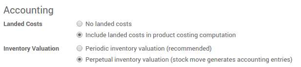
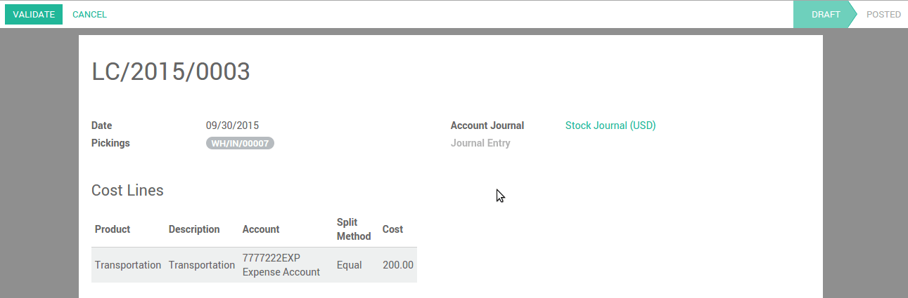

概述
到岸成本包含产品转运过程中的所有费用。
到岸成本包含＝产品的成本＋运费+关税＋保费
所有的这些组件不一定在每个交货单上都能使用，但是相关的组件必须要作为到岸价格的组成被考虑到。我们必须指定到岸成本来决定产品的销售价格，因为这会影响到公司的利润。
配置
应用配置
首先，你需要激活使用到岸成本。进入：[UNKNOWN NODE title_reference]。检查会计选项 产品成本计算包含到岸成本＆不间断的库存估值，然后点击**应用**保存变更。
然后进入：[UNKNOWN NODE title_reference]。勾选成本方法**使用'固定价','真实价'或者'平均价'成本核算方法**,然后点击**应用**保存变更。
到岸成本类型
从创建特定不同的**到岸成本**的产品开始，例如空运费，保费或者关税。进入：[UNKNOWN NODE title_reference]。

注解
到岸成本只适用于使用实时库存估值和实际成本方法的产品。成本方法可以在产品种类上设置。
链接到岸成本到转移单上
要计算到岸成本，进入：[UNKNOWN NODE problematic]存货 --> 存货控制 --> 到岸成本 [UNKNOWN NODE problematic]。
点击**创建**按钮然后选择你想分配给该到岸成本的调拨()。
选择记录到岸成本的会计分类账。我们建议为分类账创建特定的分类账。因为这样可以更加容易的追踪过账记录。

点击**计算**按钮产看到岸成本如何根据分配给各个调拨行

点击**确认**按钮确认到岸成本分配。